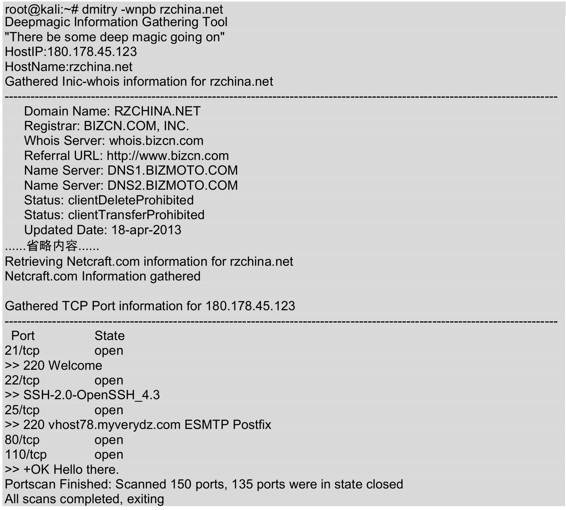
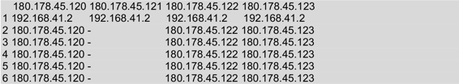
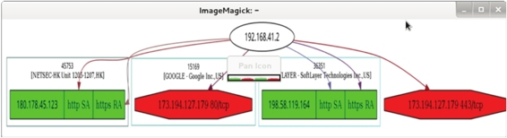

4.2 测试网络范围
测试网络范围内的IP地址或域名也是渗透测试的一个重要部分。通过测试网络范围内的IP地址或域名，确定是否有人入侵自己的网络中并损害系统。不少单位选择仅对局部IP基础架构进行渗透测试，但从现在的安全形势来看，只有对整个IT基础架构进行测试才有意义。这是因为在通常情况下，黑客只要在一个领域找到漏洞，就可以利用这个漏洞攻击另外一个领域。在Kali中提供了DMitry和Scapy工具。其中，DMitry工具用来查询目标网络中IP地址或域名信息；Scapy工具用来扫描网络及嗅探数据包。本节将介绍使用DMitry和Scapy工具测试网络范围。
4.2.1 域名查询工具DMitry
DMitry工具是用来查询IP或域名WHOIS信息的。WHOIS是用来查询域名是否已经被注册及已经注册域名的详细信息的数据库（如域名所有人和域名注册商）。使用该工具可以查到域名的注册商和过期时间等。下面将使用DMitry工具收集rzchina.net域名的信息。执行命令如下所示：

输出的信息显示了rzchina.net域名的IP地址、WHOIS信息及开放的端口号等。执行以上命令后输出的信息很多，但是由于篇幅的原因，部分内容使用省略号（……）代替。
虽然使用DMitry工具可以查看到IP或域名信息，但还是不能判断出这个网络范围。因为一般的路由器和防火墙等并不支持IP地址范围的方式，所以工作中经常要把IP地址转换成子网掩码的格式、CIDR格式和思科反向子网掩码格式等。在Linux中，netmask工具可以在IP范围、子网掩码、CIDR和Cisco等格式中互相转换，并且提供了IP地址的点分十进制、十六进制、八进制和二进制之间的互相转换。使用netmask工具将域名rzchina.net转换成标准的子网掩码格式。执行命令如下所示：
root@kali:~# netmask -s rzchina.net
180.178.45.123/255.255.255.255
输出的信息显示了rzchina.net域名的IP地址和子网掩码值。
4.2.2 跟踪路由工具Scapy
Scapy是一款强大的交互式数据包处理工具、数据包生成器、网络扫描器、网络发现工具和包嗅探工具。它提供多种类别的交互式生成数据包或数据包集合、对数据包进行操作、发送数据包、包嗅探、应答和反馈匹配等功能。下面将介绍Scapy工具的使用。
使用Scapy实现多行并行跟踪路由功能。具体操作步骤如下所示。
（1）启动Scapy工具。执行命令如下所示。
root@kali:~# scapy
INFO: Can't import python gnuplot wrapper . Won't be able to plot.
WARNING: No route found for IPv6 destination :: (no default route?)
Welcome to Scapy (2.2.0)
>>>
看到>>>提示符，表示scapy命令登录成功。
（2）使用sr()函数实现发送和接收数据包。执行命令如下所示：
>>> ans,unans=sr(IP(dst="www.rzchina.net/30",ttl=(1,6))/TCP())
Begin emission:
.****Finished to send 24 packets.
………***************…………………………………..^C #Ctrl+C终止
Received 70 packets, got 19 answers, remaining 5 packets
执行以上命令后，会自动与www.rzchina.net建立连接。执行几分钟后，使用Ctrl+C终止接收数据包。从输出的信息中可以看到收到70个数据包，得到19个响应包及保留了5个包。
（3）以表的形式查看数据包发送情况。执行命令如下所示：
>>> ans.make_table(lambda(s,r):(s.dst,s.ttl,r.src))
执行以上命令后，输出如下所示的信息：

输出的信息显示了该网络中的所有IP地址。
（4）使用scapy查看TCP路由跟踪信息。执行命令如下所示：

输出的信息，显示了与www.google.com、www.kali.org、www.rzchina.net三个网站连接后所经过的地址。输出信息中的RA表示路由区，SA表示服务区。其中路由区是指当前系统中移动台当前的位置。RA（Routing Area）的标识符是RAI，RA是包含在LA内的。服务区是指移动台可获得服务的区域，即不同通信网用户无需知道移动台的实际位置，而可与之通信的区域。
（5）使用res.graph()函数以图的形式显示路由跟踪结果。执行命令如下所示：
>>> res.graph()
执行以上命令后，将显示如图4.1所示的界面。

图4.1 路由跟踪图
如果要想保存该图，执行如下所示的命令：
>>> res.graph(target=">/tmp/graph.svg")
执行以上命令后，图4.1中的信息将会保存到/tmp/graph.svg文件中。此时不会有任何信息输出。
（6）退出scapy程序，执行命令如下所示：
>>> exit()
执行以上命令后，scapy程序将退出。还可以按下Ctrl+D组合键退出scapy程序。